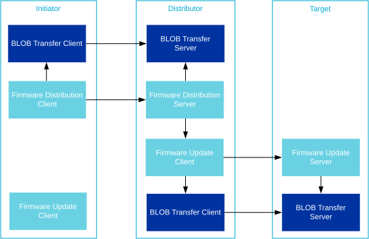
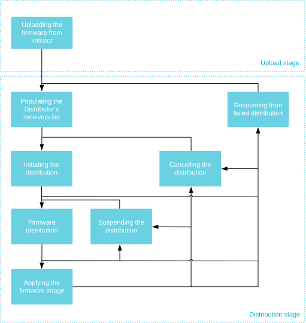

设备固件更新（DFU）
Bluetooth Mesh 支持在 Mesh 网络中分发固件镜像。Bluetooth Mesh DFU 子系统实现了 Bluetooth Mesh 设备固件更新模型规范（Device Firmware Update Model specification）1.0 版。
Bluetooth Mesh DFU 实现了一种固件镜像分发机制，对镜像的大小、格式或用途不作任何限制。该子系统的主要设计目标是提供 Bluetooth Mesh DFU 规范中可认证（qualifiable）的部分，而将镜像的使用、固件验证和部署交给应用程序。
在 Zephyr Bluetooth Mesh DFU 子系统中，DFU 规范以三个独立的模型实现：
概述
DFU 角色
Bluetooth Mesh DFU 子系统定义了 Mesh 节点在固件镜像分发过程中需要承担的三种不同角色：
- 目标节点
目标节点（Target node）是所传输固件镜像的接收者和使用者。它的全部功能都由 固件更新服务器 模型实现。一次传输可以针对任意数量的目标节点，这些节点会被同时更新。
- 分发者
分发者（Distributor）角色在 DFU 过程中有两个作用。首先，它在上传固件（Upload Firmware）过程中充当目标节点，然后再作为分发者将上传的镜像分发给其他目标节点。分发者不选择传输参数，而是依靠发起者（Initiator）为其提供目标节点列表和传输参数。分发者功能由两个模型实现：固件分发服务器 和 固件更新客户端。固件分发服务器 负责与发起者通信，固件更新客户端 负责将镜像分发给目标节点。
- 发起者
发起者（Initiator）角色通常由同时实现 Bluetooth Mesh 配网器 和 配置器 角色的设备实现。发起者需要全面了解潜在的目标节点及其固件，并控制（和发起）所有固件更新。Zephyr Bluetooth Mesh DFU 子系统没有实现发起者角色。

Bluetooth Mesh 应用程序可以按任意方式组合 DFU 角色，甚至可以通过在不同元素上实例化模型来承担同一角色的多个实例。例如，可以在发起者节点上实例化 固件更新客户端 并直接调用其 API，从而将分发者角色和发起者角色组合在一起。
也可以将发起者设备和分发者设备合并为单个设备，并用一种直接访问固件更新客户端模型的专有机制（例如通过串行协议）来替代固件分发服务器模型。
备注
所有 DFU 模型都会实例化一个或多个 BLOB 传输模型，对于某些角色组合，可能需要将它们分布在多个元素上。
阶段
Bluetooth Mesh DFU 过程设计为分三个阶段进行：
- 上传阶段
首先，由外部实体（例如手机或网关，即发起者）将镜像上传到 Mesh 网络中的分发者。在上传阶段，发起者将固件镜像及其所有元数据传输到 Mesh 网络内的分发者节点。分发者持久化存储固件镜像及其元数据，并等待发起者的进一步指令。完成上传过程所需的时间取决于镜像的大小。上传完成后，在耗时长得多的分发阶段，发起者可以断开与网络的连接。固件上传到分发者之后，发起者可以随时触发分发阶段。
- 固件能力检查阶段（可选）
在开始分发阶段之前，发起者可以选择检查目标节点是否能够接受新固件。没有响应的节点，或者响应表示无法接收新固件的节点，将被排除在固件分发过程之外。
- 分发阶段
在分发固件镜像之前，发起者将目标节点列表及其指定的固件镜像索引传输给分发者。接着，它通知分发者开始固件分发过程，该过程在后台运行，与此同时发起者和 Mesh 网络可以执行其他任务。固件镜像传输到目标节点后，分发者可以要求它们立即应用固件镜像，并回报其状态和新的固件 ID。
固件镜像
Mesh 节点固件中所有可更新的部分都应表示为一个固件镜像。每个目标节点都维护一个固件镜像列表，其中每个镜像都应当可以独立更新和识别。
固件镜像表示为一个 BLOB（即固件本身），并附带以下附加信息：
- 固件 ID
固件 ID 用于标识固件镜像。发起者节点可以向目标节点请求其当前固件 ID 列表，以确定是否有更新版本的固件可用。固件 ID 的格式由厂商自定义，但通常应包含足够的信息，使了解该格式的发起者节点能够确定镜像的类型及其版本。固件 ID 是可选的，其最大长度由
CONFIG_BT_MESH_DFU_FWID_MAXLEN决定。- 固件元数据
目标节点使用固件元数据来确定是否应接受传入的固件更新，以及更新会产生什么影响。元数据格式由厂商自定义，应包含目标节点验证镜像所需的全部信息，以及目标节点在应用镜像之前必须进行的任何准备工作。典型的元数据信息可以是镜像签名、节点组成数据（Composition Data）的变化以及 BLOB 的格式。目标节点可以在接受传入传输之前执行元数据检查，以确定是否应启动该传输。元数据检查完成后，目标节点可以丢弃固件元数据，因为其他节点永远不会向目标节点请求元数据。固件元数据是可选的，其最大长度由
CONFIG_BT_MESH_DFU_METADATA_MAXLEN决定。Zephyr 中的 Bluetooth Mesh DFU 子系统提供了自己的元数据格式（
bt_mesh_dfu_metadata），以及一组可供最终产品使用的相关函数。可以使用CONFIG_BT_MESH_DFU_METADATA选项启用对它的支持。元数据的格式如下表所示。
字段 |
大小（字节） |
描述 |
|---|---|---|
新固件版本 |
8 B |
1 B：主版本号 1 B：次版本号 2 B：修订号 4 B：构建号 |
新固件大小 |
3 B |
新固件的大小（以字节为单位） |
新固件内核类型 |
1 B |
位域：位 0：应用核 位 1：网络核 位 2：应用程序特定的 BLOB。其他位：保留供将来使用（RFU） |
传入组成数据的哈希 |
4 B（可选） |
AES-CMAC（app-specific-key, composition data）的低 4 个八位组。如果新固件内核类型字段中设置了位 0，则该字段存在。 |
新的元素数量 |
2 B（可选） |
应用固件后节点上的元素数量。如果新固件内核类型字段中设置了位 0，则该字段存在。 |
新固件的应用程序特定数据 |
<可变>（可选） |
应用程序特定的数据，使应用程序能够在回复状态消息之前，利用这些数据执行某些厂商自定义的行为。 |
备注
AES-CMAC 算法在这里充当使用固定密钥的哈希函数，在 Bluetooth Mesh DFU 元数据中并不用于加密。由于密钥是已知的，得到的哈希值并不安全。
- 固件 URI
固件 URI 向发起者提供可以在何处找到该镜像固件更新的信息。URI 指向一个在线资源，发起者可以与之交互以获取新版本的固件。这样，发起者就可以通过与 URI 所指向的 Web 服务器交互，为 Mesh 网络中的任意节点执行更新。URI 必须使用
http或https方案指向资源，并且目标 Web 服务器的行为必须符合规范定义的“通过 HTTPS 检查固件”（Firmware Check Over HTTPS）过程。固件 URI 是可选的，其最大长度由CONFIG_BT_MESH_DFU_URI_MAXLEN决定。备注
不支持带外分发机制。
固件影响
新镜像的组成数据页 0 可能与目标节点上已分配的不同。这可能会影响节点的配网数据，以及分发者完成 DFU 的方式。根据旧镜像和新镜像中是否提供远程配网服务器模型，设备在应用新固件后可能以未配网状态启动，或者需要重新配网。可用选项的完整列表定义在 bt_mesh_dfu_effect 中：
BT_MESH_DFU_EFFECT_NONE烧录新固件后，设备保持已配网状态。如果新固件的组成数据没有变化，则选择此影响。
BT_MESH_DFU_EFFECT_COMP_CHANGE_NO_RPR当组成数据发生变化且设备不支持远程配网时，选择此影响。新的组成数据只有在重新配网后才会生效。
BT_MESH_DFU_EFFECT_COMP_CHANGE当组成数据发生变化且设备支持远程配网时，选择此影响。在这种情况下，设备保持已配网状态，新的组成数据在使用远程配网模型重新配网后生效。
BT_MESH_DFU_EFFECT_UNPROV如果新固件中的组成数据发生变化、设备不支持远程配网，并且新的组成数据在应用固件后即生效，则选择此影响。如果出于应用程序特定的原因需要将设备取消配网，也可以选择此影响。
当目标节点收到 Firmware Update Firmware Metadata Check 消息时，固件更新服务器模型会调用 bt_mesh_dfu_srv_cb.check 回调，应用程序随后可以处理元数据并提供影响值。如果影响为 BT_MESH_DFU_EFFECT_COMP_CHANGE，应用程序必须在应用新固件镜像之前调用 bt_mesh_comp_change_prepare() 和 bt_mesh_models_metadata_change_prepare() 函数，以准备组成数据页和模型元数据页的内容。更多信息请参阅 组成数据和模型元数据。
DFU 过程
DFU 协议由一组必须按特定顺序执行的过程实现。
发起者控制 DFU 协议的上传阶段，分发者一侧对上传子过程的所有处理都在 固件分发服务器 中实现。
分发阶段由分发者控制，由 固件更新客户端 实现。目标节点在 固件更新服务器 中实现对这些过程的全部处理，并通过一组回调通知应用程序。

上传固件
上传固件（Upload Firmware）过程使用 BLOB 传输模型 将固件镜像从发起者传输到分发者。上传固件过程分两步进行：
发起者生成一个 BLOB ID，并将其与固件信息以及 BLOB 传输的其他输入参数一起发送给分发者的固件分发服务器。固件分发服务器存储这些信息，并让其 BLOB 传输服务器为即将到来的传输做好准备，然后向发起者回复一条状态消息。
发起者的 BLOB 传输客户端模型将固件镜像传输到分发者的 BLOB 传输服务器，后者将镜像存储在预先确定的 Flash 分区中。
BLOB 传输完成后，固件镜像就可以分发了。发起者可以向分发者上传多个固件镜像，并要求它以任意顺序或在任意时间分发这些镜像。此外还有用于在分发者上查询和删除固件镜像的过程。
分发者与固件镜像相关的以下能力可以通过配置选项进行配置：
CONFIG_BT_MESH_DFU_SLOT_CNT：设备上可用的镜像槽数量。CONFIG_BT_MESH_DFD_SRV_SLOT_MAX_SIZE：每个镜像允许的最大大小。CONFIG_BT_MESH_DFD_SRV_SLOT_SPACE：所有镜像可用的总空间。
填充分发者的接收者列表
在分发者开始分发固件镜像之前，它需要一个接收镜像的目标节点列表。发起者可以直接查询潜在的目标节点，或者通过某个外部权威机构，获取完整的目标节点列表。发起者使用这些信息，以每个目标节点的地址和相应的固件镜像索引来填充分发者的接收者列表。发起者可以发送一条或多条 Firmware Distribution Receivers Add 消息来构建分发者的接收者列表，并发送 Firmware Distribution Receivers Delete All 消息来清空该列表。
可以添加到分发者的最大接收者数量通过 CONFIG_BT_MESH_DFD_SRV_TARGETS_MAX 配置选项设置。
发起分发
当分发者存储了固件镜像并收到目标节点列表后，发起者就可以发起分发过程。分发所用的 BLOB 传输参数会与更新策略一起传给分发者。更新策略决定分发者是否应请求目标节点应用固件。分发者存储传输参数，并开始向其目标节点列表分发固件镜像。
固件分发
分发者的固件更新客户端模型使用其 BLOB 传输客户端模型的广播子系统与所有目标节点通信。固件分发按以下步骤执行：
分发者的固件更新客户端模型生成一个 BLOB ID，并将其与其他 BLOB 传输参数、目标节点固件镜像索引以及固件镜像元数据一起发送给每个目标节点的固件更新服务器模型。每个目标节点执行元数据检查，并让其 BLOB 传输服务器模型为传输做好准备，然后向固件更新客户端发送状态响应，指明固件更新是否会对节点的 Bluetooth Mesh 状态产生影响。
分发者的 BLOB 传输客户端模型将固件镜像传输到所有目标节点。
收到 BLOB 传输后，目标节点的应用程序会根据镜像元数据执行签名验证或镜像校验和等检查，以验证固件是否有效。
分发者的固件更新客户端模型查询所有目标节点，以确保它们都已验证了固件镜像。
如果分发过程完成时，至少有一个目标节点报告已收到并验证了镜像，则认为分发过程成功。
备注
只有在 所有 目标节点都丢失时，固件分发过程才会失败。当前尝试结束后，由发起者负责向分发者请求失败的目标节点列表，并发起额外的尝试来更新丢失的目标节点。
挂起分发
发起者还可以请求分发者挂起固件分发。在这种情况下，分发者将停止向目标节点发送任何消息。恢复固件分发时，分发者将从最后一个成功传输的块继续发送固件。
应用固件镜像
如果发起者提出了请求，分发者可以在所有成功接收并验证了固件镜像的目标节点上发起“在目标节点上应用固件”（Apply Firmware on Target Node）过程。该过程不带参数，为避免歧义，应在发起新的传输之前执行。在目标节点上应用固件过程包括以下步骤：
分发者的固件更新客户端模型指示所有已验证固件镜像的目标节点应用该镜像。目标节点的固件更新服务器模型先回复一条状态消息，然后再调用其应用程序的
apply回调。目标节点的应用程序在应用传输之前执行所需的准备工作，例如存储组成数据的快照或清除其配置。
目标节点的应用程序将当前固件替换为新镜像，并用新的固件 ID 更新其固件镜像列表。
分发者的固件更新客户端模型向每个目标节点请求完整的固件镜像列表，并逐一检查该列表，确保新的固件 ID 已替换了旧的固件 ID。
备注
在分发过程的元数据检查中，目标节点可能已报告在应用固件镜像后将变为未配网状态。在这种情况下，分发者的固件更新客户端模型将发送获取完整固件镜像列表的请求，并且不期待收到响应。
取消分发
发起者可以随时取消固件分发。在这种情况下，分发者通过向所有目标节点发送取消消息来启动取消过程。分发者等待所有目标节点的响应。当所有目标节点都已回复或请求超时后，分发过程即被取消。此后，可以从 Firmware distribution 一节所述步骤重新开始分发过程。
API 参考
本节列出设备固件更新 Mesh 模型通用的类型。
- bt_mesh_dfd
- bt_mesh_dfu
- bt_mesh_dfu_metadata